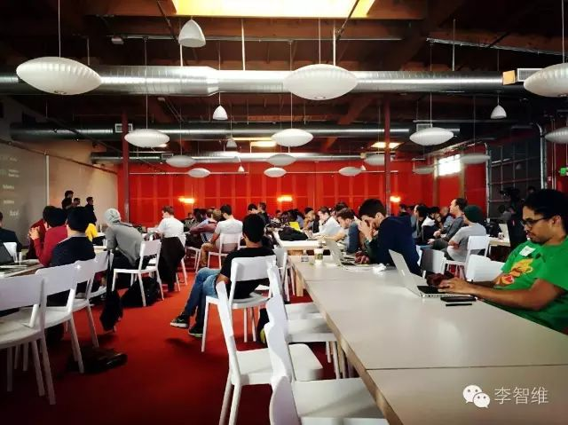

21 साल के CEO के साथ छोटे लक्ष्यों को हासिल करें | मूल, AI द्वारा अनुवादित

यह तस्वीर मैंने मार्च में सिलिकॉन वैली जाने के दौरान Y Combinator में ली थी। उस कमरे में दुनिया भर से आए लोग, ज्यादातर 20 साल के आसपास के, जैसे MIT के दूसरे और तीसरे वर्ष के छात्र, स्टार्टअप शुरू कर रहे थे। मुझे लगा कि मेरे हमउम्र के सबसे प्रतिभाशाली लोग पहले ही स्टार्टअप की राह पर चल पड़े हैं। अगर मैं खुद स्टार्टअप नहीं शुरू करता, तो और पीछे रह जाऊंगा। इसलिए, एक बार फिर, नई शुरुआत करने का फैसला किया।

218 लाइक्स मिले हैं, हर दोस्त के समर्थन के लिए बहुत धन्यवाद।
मैं आज तक कैसे पहुंचा हूं? क्या वह प्रेरणा थी जिसने 21 साल के मुझे बिना किसी हिचकिचाहट के आगे बढ़ने के लिए प्रेरित किया, और मुझे दृढ़ता से काम करने के लिए प्रेरित किया?
अनुभव
मेरा अनुभव। सरल, मिडिल स्कूल से कोड लिखना शुरू किया, एल्गोरिदम प्रतियोगिताओं में भाग लिया। कॉलेज के पहले वर्ष में बीजिंग फॉरेस्ट्री यूनिवर्सिटी में प्रवेश किया, कई Android ऐप्स बनाए, जिनमें स्कूल के 3500 छात्रों द्वारा उपयोग किया जाने वाला “बीजिंग फॉरेस्ट्री असिस्टेंट” और हैकाथॉन में तीसरा पुरस्कार जीतने के बाद कई महीनों तक विकसित किया गया “iword” शामिल है। कॉलेज के पहले वर्ष की गर्मियों में LeanCloud में इंटर्नशिप की, फिर ड्रॉपआउट करके LeanCloud में डेढ़ साल काम किया, शुरुआत में एक नौसिखिया से लेकर बाद में पूर्व Google, Alibaba और Wandoujia के सहयोगियों के बीच प्रदर्शन में शीर्ष आधे में शामिल हो गया, कंपनी के लिए Android और iOS दोनों संस्करणों के ऐप “LeanChat” बनाए, कई डेमो भी लिखे, और कंपनी के iOS SDK का भी विकास किया, कंपनी द्वारा दिए गए 15k वेतन के लायक साबित हुआ। फिर नवंबर 2015 में, Ye Gucheng और अन्य साथियों के साथ “Reviewcode.cn” की स्थापना की, बाद में एक्सचेंज मीटिंग्स और ट्रेनिंग क्लासेस आयोजित कीं, जिनसे 150,000 की आय हुई। टीम में मैंने बैकएंड, आधे फ्रंटएंड डेवलपमेंट और आधे ट्रेनिंग की जिम्मेदारी संभाली, उत्पाद को आगे बढ़ाने और काम को सही ढंग से पूरा करने में मदद की। मार्च में, सिलिकॉन वैली में सीखने के लिए गया, Google का दौरा किया, दुनिया के सबसे बड़े इनक्यूबेटर YC में स्टार्टअप का अनुभव किया, रास्ते में सिलिकॉन वैली में काम करने का एक अच्छा मौका भी मिला, लेकिन मैंने इसे छोड़ दिया। बाद में जून में वापस आने के बाद, टीम की दिशा में समस्याएं आईं और हमने इसे जारी नहीं रखा। मैंने पूर्व Jumei के वाइस प्रेसिडेंट Mr. Ye और पूर्व Jumei के CTO Brother Yang Jun के साथ दूसरी बार स्टार्टअप की कंपनी में शामिल हो गया, और उनके साथ अक्सर दो-तीन बजे तक काम किया। इस दौरान, जब भी मौका मिलता, मैं उनसे बात करता, दोनों बॉस 30 साल के आसपास के युवा और प्रतिभाशाली उदाहरण हैं, जिन्होंने मुझे बहुत कुछ सिखाया। लेकिन मेरी प्रकृति वास्तव में बहुत अधीर है… बॉस की उम्मीदों पर खरा नहीं उतर पाया, और फिर से खुद स्टार्टअप शुरू कर दिया…
इस तरह, 21 साल की उम्र में, कॉलेज के चौथे वर्ष में, मैंने 25k का वेतन छोड़कर, फिर से स्टार्टअप शुरू करने का फैसला किया। वास्तव में, जो लोग मेरे साथ काम कर चुके हैं, वे मुझे बेहतर समझेंगे, ऊपर दी गई जानकारी कुछ सतही है। उदाहरण के लिए, मैं iOS, Android, बैकएंड, फ्रंटएंड जैसे पदों पर 20k से 30k तक की नौकरी पा सकता था, और कुछ स्टार्टअप कंपनियों ने मुझे तकनीकी निदेशक के रूप में काम करने के लिए आमंत्रित भी किया था।
हालांकि, मैं अभी भी बहुत नौसिखिया हूं। कृपया इस लेख को पढ़ने वाले महान लोग मेरा मज़ाक न उड़ाएं। आखिरकार, मैं काफी लोगों को जानता हूं, और मैं समझता हूं कि मैं किस स्तर पर हूं।
स्टार्टअप क्यों शुरू करें?
मैं भी पहले उद्यम शुरू करने का साहस नहीं रखता था। उद्यम शुरू करना कितना मुश्किल काम है। पैसा कहाँ से आएगा? लोग कहाँ से मिलेंगे? क्या करना है? इत्यादि। यहाँ तक कि कंपनी कैसे पंजीकृत करें, यह भी समझ में नहीं आता था। लेकिन ऐसा है, कई चीजों का अनुभव करने के बाद, कई लोगों और चीजों को देखने के बाद, स्वाभाविक रूप से साहस और आत्मविश्वास आ जाता है।
高考结束后的那个暑假，我做了两件事：1）学习了 Lisp 2）反复阅读了《黑客与画家》。那时的我，多年参加算法竞赛却没有什么成就，高考成绩也不理想。一方面，被陈立杰等获得国际金牌的大神们碾压；另一方面，在高考的千军万马中也被虐得体无完肤。我真的很平庸，曾经自命不凡的我实际上是多么的平庸……小时候，总以为自己长大后会成为一个了不起的人，但现实是，你越来越发现自己其实很菜。所以压力很大，我必须要做点什么来改变现状。
बीजिंग आने के पहले दिन ही मैं CSDN द्वारा आयोजित चाइना सॉफ्टवेयर डेवलपर कॉन्फ्रेंस में शामिल हो गया। वहां मैंने “डा हुआ शी यू” (大话西游) के मुख्य प्रोग्रामर यून फेंग (云风) से बात की। मैंने उनसे पूछा, “जब आप लोग पहली बार कोड लिख रहे थे, तो किसके साथ चर्चा करते थे?” उन्होंने मुस्कुराते हुए कहा, “नहीं, बस खुद ही सराहना करते थे।”
फिर मैंने देखा कि कोई Lisp के बारे में बात कर रहा है, वह LeanCloud के तकनीकी प्रमुख डेनिस (Dennis) थे। उनकी बात खत्म होने के बाद मैं चुपके से पहली पंक्ति में जाकर उनसे बात करने लगा, यह जानने के लिए कि वे कोड लिखने के लिए कौन सा सॉफ्टवेयर इस्तेमाल करते हैं। वापस आकर मैंने ऑनलाइन खोज की और पता चला कि डेनिस भाई पहले Alibaba के मिडलवेयर तकनीकी विशेषज्ञ थे, उन्होंने कुछ ओपन सोर्स प्रोजेक्ट्स भी किए हैं, जिनका उपयोग JD.com और Tencent जैसी बड़ी कंपनियां कर रही हैं।
बाद में मैंने Dennis भाई को एक ईमेल लिखा, और इस तरह LeanCloud में इंटर्नशिप और नौकरी करने का मौका मिला। डेढ़ साल तक, मैंने अपने सहकर्मियों और बॉस के व्यवहार को गहराई से देखा और उनके अच्छे गुणों से सीखने की कोशिश की। हमारे बॉस, Jiang Hong, येल यूनिवर्सिटी से पीएचडी हैं, Google में तीन साल काम करने के बाद, वे चीन वापस आए और पहले Delicious Bookmarks और फिर LeanCloud की स्थापना की। मैंने उनके हर एक शब्द और कार्य को समझने की कोशिश की कि कैसे उन्होंने यह सब हासिल किया। Dennis, जो टेक्निकल लीड के रूप में काम करते हैं, न केवल तकनीकी मामलों में महारत रखते हैं, बल्कि दैनिक तकनीकी प्रबंधन का भी जिम्मा संभालते हैं। उनकी लगातार उच्च उत्पादकता हमेशा मुझे आश्चर्यचकित करती रही कि वे इसे कैसे कर पाते हैं। अन्य सहकर्मी भी अपने-अपने क्षेत्र में बहुत माहिर हैं। LeanCloud में इस शानदार अनुभव के लिए मैं बहुत आभारी हूं, यह मेरे लिए एक बेहतरीन यूनिवर्सिटी की तरह रहा।
LeanCloud ने आधे साल से अधिक समय तक Microsoft इनक्यूबेटर में काम किया, जिसके दौरान मैंने पड़ोस की कुछ कंपनियों के दोस्तों और मालिकों से परिचय प्राप्त किया, जैसे कि Kungfu Bear के WR, LX, और QuantGroup के कई लोग। वे पहले Baidu वीडियो के उत्पाद प्रबंधक थे और अब अपना खुद का व्यवसाय शुरू कर चुके हैं। कुछ लोग Wall Street और Google से वापस आकर व्यवसाय शुरू कर रहे हैं। कुछ कंपनियों में सभी कर्मचारी Tsinghua University से हैं।
माइक्रोसॉफ्ट इनक्यूबेटर में बिताए दिनों में, मैंने वास्तव में कई लोगों से मुलाकात की, जिनमें Matt Scott भी शामिल हैं, जो मालोंग टेक्नोलॉजी के CTO हैं और पहले माइक्रोसॉफ्ट में वरिष्ठ डेवलपमेंट लीड थे। वे कई विश्व स्तरीय कॉन्फ्रेंस पेपर्स के लेखक हैं। सुज़ौ स्ट्रीट पर रात के दो बजे, उन्होंने मुझसे कहा, “युवा, धैर्य रखो, अपने मुख्य कौशल को विकसित करो। यदि तुम दुनिया के शीर्ष स्तर का काम करना चाहते हो, तो सिर्फ जिज्ञासा ही काफी नहीं है, बल्कि उस दुनिया को बदलने की आकांक्षा भी होनी चाहिए। कल्पना करो कि एक दिन तुम्हारा काम दुनिया पर बड़ा प्रभाव डालेगा।”
बाद में मैंने कुछ प्रतिभाशाली साथियों को भी जाना, जैसे कि JZP, जो LeanCloud में इंटर्नशिप करके स्टार्टअप कंपनी का माहौल महसूस करना चाहते थे, उन्होंने मुझे ईमेल करके संपर्क किया। ZP ने मिडिल स्कूल की दूसरी कक्षा में ही राष्ट्रीय सूचना विज्ञान प्रतियोगिता में पहला पुरस्कार जीता था। अब वे Tsinghua University के Yao Class में हैं, और उनके कॉलेज की छुट्टियाँ Microsoft और Google में इंटर्नशिप करते हुए बीतती हैं। वे आमतौर पर ब्राउज़र इंजन, MongoDB के सोर्स कोड पढ़ते हैं, और डीप लर्निंग पर शोध करते हैं। कभी-कभी ACM प्रतियोगिता में जाकर पहला पुरस्कार जीतकर आराम करते हैं। उनसे कुछ बार मिलने के बाद, मैंने देखा कि ये लोग लंबे समय से कठिन समस्याओं पर शोध कर रहे हैं, इसलिए मुझे लगता है कि मेरे लिए जो समस्याएँ कठिन हैं, वे उनके लिए कोई बड़ी बात नहीं हैं। वे चीजों के सिद्धांतों के प्रति उत्सुक हैं और जो चीजें उन्हें पसंद हैं, उन्हें गहराई से समझते हैं।
后来宜龙加入了公司，他的微博「iOS 程序犭袁」有两万多的粉丝，大多是 iOS 工程师。我就帮宜龙熟悉公司业务，宜龙也帮忙转发我的开源项目，吸引了一些人来关注。名气是个好东西，虽然工程师应该默默地写代码、练内功，但有了名气之后，做出的东西才会吸引更多人关注和提意见。公司更是如此，不仅要有好产品，还要有好的市场推广。
11 महीने में, मैं Ye Gucheng से मिला, जो iOS समुदाय में एक बड़ा नाम है। एक साथ खाना खाते समय हमें एक स्टार्टअप आइडिया सूझा, और हमने इस पर खूब चर्चा की। मैं पहले से ही स्टार्टअप करने की सोच रहा था, और यह मौका मिलने पर मैंने इस यात्रा की शुरुआत कर दी। दो-तीन महीने के विकास के बाद, फरवरी के मध्य में हमने अपना उत्पाद “Reviewcode.cn” लॉन्च किया, और फरवरी के अंत तक, हर दिन लगभग 8000 PV हो रहे थे। लेकिन हमें पता चला कि यह आइडिया इतना मजबूत नहीं था, और हमें लगा कि हमारी ऑफलाइन क्षमताएं कमजोर हैं। इसलिए हमने कार्यशालाएं और सेमिनार आयोजित करने का फैसला किया, और ऑफलाइन गतिविधियों को संगठित करने की कोशिश की। बाद में, मैं हर दिन छात्रों को प्रोग्रामिंग सिखाता था, और रात को Douyu पर लाइव क्लासेस लेता था, ताकि दूर और नजदीक दोनों जगह के छात्र इसे देख सकें। मेरा अनुभव यह है कि ऑफलाइन काम करना भी संभव है, हालांकि इसमें बहुत दौड़-धूप और मेहनत लगती है, लेकिन यह उतना मुश्किल नहीं है जितना लगता है।
3月に、シリコンバレーに行きました。大学1年生の時のティーチングアシスタントだったXH兄の助けを借りて、Googleで朝食を食べ、近くを散策しました。彼の同僚やルームメイトと知り合い、彼らは北京大学や中国科学技術大学で修士課程を修了し、卒業後にGoogleに来た人たちでした。3人で大きな一軒家を借りて、普段は車で通勤しています。週末にはヨセミテ国立公園やニューヨークに遊びに行きます。別の生活を垣間見ることができました。

कंप्यूटर इतिहास संग्रहालय का दौरा किया, वहां विभिन्न पूर्वजों के उत्कृष्ट कार्यों को देखा, जो अबेकस से लेकर पर्सनल कंप्यूटर तक के विकास के कदमों को दर्शाते हैं।

स्टैनफोर्ड में घूमते हुए, मैंने कुछ बहुत ही प्रतिभाशाली लोगों से मुलाकात की। इनमें से एक यहाँ जीव विज्ञान में पीएचडी कर रहे एक साथी थे, एक अमेरिका में पले-बढ़े स्टैनफोर्ड कंप्यूटर साइंस विभाग के छात्र थे, और एक कैम्ब्रिज से स्नातक करने के बाद यहाँ रसायन विज्ञान में पीएचडी कर रहे दोस्त थे।
फिर हम Y Combinator गए, जहां बहुत से युवा उद्यमी अपने स्टार्टअप्स पर काम कर रहे थे। वहां हमें एक चीनी टीम “Mailtime” से मिलने का मौका मिला, जिसका चीनी नाम “简信” है। उनके बॉस HH एक सीरियल एंटरप्रेन्योर हैं, जिन्होंने पहले Talkbox बनाया था, जो वॉयस चैट फीचर का अग्रणी था। उन्होंने बताया कि जब वे अपने पिता के साथ चैट करते थे, तो उनके पिता टाइप नहीं कर पाते थे, इसलिए उन्होंने सोचा कि क्यों न वॉयस मैसेज भेजकर चैट किया जाए। Mailtime टीम के लोग भी बहुत प्रतिभाशाली हैं। उनके सह-संस्थापक Hockey हाई स्कूल में एल्गोरिदम प्रतियोगिता में राष्ट्रीय स्तर पर पहले स्थान पर रहे हैं, और उन्होंने Tsinghua University और UC Berkeley से स्नातक किया है, साथ ही Twitter में दो साल तक काम किया है। Evan ने Tsinghua University और CMU से स्नातक किया है। YX जी और Frank जैसे अन्य सदस्य भी Hong Kong University से स्नातक हैं और बहुत प्रतिभाशाली हैं। उन्होंने मुझे Gmail के संस्थापक के घर पर हुए पार्टी के बारे में बताया, और उनका घर कितना शानदार था, वगैरह।
रहने के मामले में भी मैंने बहुत कुछ सीखा। Airbnb के मकान मालिक स्थानीय थे, और जब Apple 84 में सार्वजनिक हुआ था, तब से ही वे Steve Jobs के बारे में जानते थे। दशकों से वे उनकी खबरें सुनते आ रहे थे। उन्होंने मुझे बताया कि हाई-टेक को बहुत ऊर्जा की आवश्यकता होती है, और यह युवाओं का काम है। अचानक मुझे लगा कि Steve Jobs इतने करीब हैं।
NBA का एक मैच भी देखा, समुद्र तट, गोल्डन गेट ब्रिज, यूनियन स्क्वायर, सैन फ्रांसिस्को सिटी हॉल जैसे विभिन्न स्थानों पर घूमा। दुनिया बहुत बड़ी है, और हर दिन अंग्रेजी बोलना भी बहुत मजेदार है। दुनिया को एक्सप्लोर करने, विभिन्न लोगों से मिलने, और यह नहीं जानने की भावना कि आज क्या होने वाला है, वास्तव में अद्भुत है। उदाहरण के लिए, बार में बैठकर पास की सुंदर लड़की से बात करना, वह एक निर्देशक है, और उसने मुझे स्कीइंग और विभिन्न सुंदर प्राकृतिक दृश्यों की तस्वीरें दिखाईं। वह, सूर्यास्त, और अंतहीन बर्फ, सब कुछ बहुत खूबसूरत था। करियर में सफल होने के साथ-साथ हर जगह घूमना, यह सोचना भी मुश्किल है कि जीवन इतना शानदार हो सकता है।

6月に、チームの方向性に問題が生じました。やむを得ず、仕事を探し始め、元Jumei副社長の葉老板と知り合いました。当時、彼らはライブ配信しながらショッピングができるプラットフォーム「拍拍酱」のチームを構築していました。葉老板の人生もすごいもので、北京師範大学を卒業し、1年間働いた後、2009年9月に化粧品ECサイト「粉皮儿」を立ち上げ、Jumeiと激しい競争を繰り広げた後、2011年4月にJumeiと合併し、その後サプライチェーン副社長を務め、2014年にJumeiが上場した後、Jumeiの急速免税店の構築を担当し、2015年にJumeiを離れた後、1年間エンジェル投資家として活動しました。本当にすごい人生で、私が目指す人生そのものです！CTOの楊Junさんもすごい人で、以前はJumeiのCTOで、その前に起業して会社を売却した経験もあります。そこで、私は彼らに加わることを承諾しました！
पीपाईजियांग में एक महीने के दौरान, जब भी मुझे समय मिलता, मैं बॉस ये के साथ बातचीत करता, खाने के समय एक प्लेट लेकर बॉस के साथ बैठ जाता, और रात को जब बॉस को फुर्सत होती, तो उनके साथ गलियारे में कुछ चक्कर लगाता। हम उनसे बात करते कि उन्होंने शुरुआत कैसे की, ब्रांड सहयोग कैसे हासिल किया, और उनसे ऑपरेशन के बारे में सुनते। वे कहते थे कि भले ही उपयोगकर्ता पसंद न करें, फिर भी यह जानने की कोशिश करें कि वे क्यों पसंद नहीं करते। दूसरों को पुश करने से डरो मत, पुश करना सीखो। एक बार पुश करने से काम नहीं चले, तो दूसरी बार, तीसरी बार पुश करो, लगातार पुश करते रहो। हमेशा खुद ही न करो, न समझ आए तो पूछो, बिना शर्म के पूछो। बॉस ये भी बहुत मेहनती व्यक्ति हैं, अक्सर दो-तीन बजे तक इंटरव्यू के लिए इंतजार करते रहते हैं, पूरे दिन व्यस्त रहते हैं। शनिवार को आराम के दिन भी वे ऐप के साथ खेलते रहते हैं, उत्पाद का परीक्षण करते हैं। हम अक्सर 11 बजे के बाद तक काम करते हैं, कभी-कभी दो-तीन बजे तक, हफ्ते में छह दिन। इसलिए सोने के समय के अलावा, हमारे पास कोई खाली समय नहीं होता। हम सभी इसे स्वेच्छा से करते हैं। यही उनकी खासियत है, वे हम जैसे मेहनती लोगों को ढूंढ लेते हैं और फिर हमें मेहनत करने के लिए प्रेरित करते हैं।
एक हफ्ते बिताने के बाद, उन्होंने मुझसे पूछा, क्या तुम्हें यहाँ पसंद है? मैंने कहा, हाँ, मुझे पसंद है, मैं पूरी तरह से काम में लगा हूँ, चाहे भविष्य में हम कुछ भी करें, यह हमारे भविष्य के लिए बेहतर होगा। उन्होंने कहा, हाँ, अब और मेहनत करो, तभी भविष्य बेहतर होगा। शायद उनके मन में सोच रहे होंगे कि यह एक अच्छा कर्मचारी है। हाहा। सच में ऐसा ही है, मैंने जानबूझकर बॉस को खुश करने की कोशिश नहीं की। मुझे अब पछतावा हो रहा है कि पहले के कुछ दिनों में मैंने और मेहनत नहीं की, जिससे मैं और अधिक क्षमता के साथ अपना व्यवसाय शुरू कर सकता।
बॉस ने मुझे एक CEO का उदाहरण दिया। जून गे ने मुझे एक CTO का उदाहरण दिया। पहले दो हफ्तों में, मैं अक्सर जून गे के साथ देर रात तक काम करता था। जून गे, पूर्व Jumei CTO, जिनके पास कई घर हैं, इतने सफल होने के बावजूद भी इतनी मेहनत करते हैं, तो मेरे जैसे कमजोर व्यक्ति के पास मेहनत न करने का कोई कारण नहीं है। बाद में जून गे बीमार पड़ गए, इसलिए हमने इतना देर तक काम करना बंद कर दिया, और दो-तीन बजे तक घर चले जाते थे। उनके साथ कलात्मक Wangjing SOHO से नीचे उतरकर, Poly Theatre के सामने वाली सड़क पर, जून गे के Uber के आने का इंतज़ार करते हुए, मैं इस मौके का फायदा उठाकर उनसे कुछ और बातें करता था। उन्होंने मुझे Jumei की कई कहानियाँ सुनाईं, जैसे कि पहले बड़े प्रमोशन के दौरान सर्वर डाउन हो जाते थे, और इसे ठीक करने में एक-दो साल लग गए, जिसके बाद उन्होंने इसे सुलझा लिया और फिर विदा ले ली। उन्होंने Jumei के Chengdu R&D सेंटर में सैकड़ों लोगों की टीम कैसे बनाई। वीकेंड पर हाइकिंग एक्टिविटीज़ के दौरान, उन्होंने कुछ दृढ़ निश्चयी IT पेशेवरों से मुलाकात की, और उन्हें Jumei में शामिल होने के लिए आमंत्रित किया, जो बाद में बहुत अच्छा प्रदर्शन करते थे। बड़े प्रमोशन के दौरान, Chen Ou उन्हें कोड लिखते और बग ठीक करते हुए देखता रहता था।
एक महीने तक काम करने के बाद, इतनी सारी कहानियाँ सुनने के बाद भी, मेरे मन में एक कंपनी को शून्य से बड़ा बनाने की इच्छा को दबाना मुश्किल हो रहा था। मैंने बॉस ये से बात की, उन्होंने कहा: “लगता है कि तुम सतही चीज़ों पर ज़्यादा ध्यान दे रहे हो, किसी के बारे में सुनते हो कि वह बहुत मशहूर या बहुत काबिल है, और फिर चिंतित हो जाते हो। मेरे पास शुरुआत में एक अंधविश्वास था, मुझे विश्वास था कि मैं ज़रूर सफल होऊंगा। तुम उन लोगों को देखो जिन्होंने बड़े काम किए हैं, उनके अंदर एक मजबूत आत्मविश्वास होता है।”
यह वाक्य मेरे दिमाग में गूंज रहा है, डर है कि कहीं भूल न जाऊं, इसलिए मैंने इसे अपनी नोटबुक में लिख लिया है। जून भाई ने अंत में मुझसे कहा, दुनिया क्रूर है, चेन ओउ और मिस्टर ये जैसे लोग, जो शीर्ष पर पहुंच चुके हैं, उन्होंने जो कठिनाइयां झेली हैं और जिन संघर्षों का सामना किया है, उसकी कल्पना भी नहीं की जा सकती। अपना ख्याल रखना।
मेरे मन में, यह विचार लंबे समय तक घूमता रहा, और मैं गहरे विचारों में डूब गया।
जो रास्ता तय करना है, उसे तय करना ही होगा, और साथ ही खुद को यह बताना होगा कि मुश्किलों का सामना करने के लिए तैयार रहना है। बॉस के अनुभव को जानकर, मुझे लगता है कि मैं भी उस तरह का कुछ हासिल कर सकता हूँ। हालांकि रास्ते में कई मुश्किलें और कठिनाइयाँ होंगी, लेकिन मैं आगे बढ़ने के लिए तैयार हूँ, अपने सबसे अच्छे सालों को सबसे कठिन कामों में लगाकर, एक सुंदर जीवन की कहानी लिखने के लिए।
हाँ, दोस्तों, क्या आप मेरे साथ आगे बढ़ना चाहेंगे?
पिछले एक महीने में, मैंने कंपनी पंजीकरण, मुहर बनवाना, राष्ट्रीय और स्थानीय कर रिपोर्टिंग, बैंक खाता खोलना, बैकएंड विकास, फ्रंटएंड विकास, और डिज़ाइन ड्राइंग तैयार करने जैसे काम किए हैं। यह बहुत व्यस्त और संतोषजनक रहा है। मेरे दूसरे सहयोगी ने iOS ऐप बनाने का जिम्मा लिया है, और उन्होंने भी अधिकांश काम पूरा कर लिया है। हम हमेशा पहला संस्करण जल्दी से लॉन्च करना चाहते थे, लेकिन अच्छे लोगों को ढूंढने पर ध्यान नहीं दिया। अब हमें एहसास हुआ है कि उत्कृष्ट लोगों को इकट्ठा करने से ही कंपनी तेजी से आगे बढ़ सकती है। इसलिए, हम डिज़ाइन सहयोगी, तकनीकी सहयोगी (बैकएंड या Android), ऑपरेशन सहयोगी, और सामान्य सहयोगी (जो उत्कृष्ट हों) की तलाश कर रहे हैं। सहयोगियों की हिस्सेदारी 10% से 30% के बीच हो सकती है। यह सिर्फ मेरी कंपनी नहीं है, यह उन युवाओं की कंपनी है जिनके पास एक साझा महत्वाकांक्षा और लड़ने की क्षमता है!
हम जो करने जा रहे हैं, वह इन वर्षों में मैंने जो संपर्क बनाए हैं, उन सभी संसाधनों का उपयोग करके एक ऐसा विचार है जो सबसे अधिक मूल्य (पैसा कमाने) का अवसर प्रदान करता है। यह इन वर्षों में क्लाउड कंप्यूटिंग, ई-कॉमर्स, और आईटी शिक्षा के क्षेत्र में मेरी अंतर्दृष्टि से प्राप्त एक नई दिशा है। मैं इस काम को पूरा करने के लिए अपनी कीमती युवावस्था खर्च करने को तैयार हूं।
मेरा WeChat ID है lzwjava। अगर हम पहले से दोस्त हैं, तो कृपया मुझे सीधे संदेश भेजें। अगर हम अभी तक नहीं मिले हैं, तो आप मुझे WeChat पर जोड़कर अपना रिज्यूमे भेज सकते हैं। आपसे मिलकर बहुत खुशी होगी, और मुझे उम्मीद है कि हम साथ मिलकर सपने बुन सकेंगे! अगर आप मेरे साथ दोस्ती करना चाहते हैं, तो भी मुझे WeChat पर जोड़ सकते हैं। इसके अलावा, अगर आप मदद कर सकते हैं और इसे आगे शेयर कर सकते हैं, तो मैं आपका आभारी रहूंगा।
जीवन बहुत छोटा है, हम एक पल में अपने माता-पिता की उम्र तक पहुँच जाते हैं, और फिर एक पल में तीस, चालीस की उम्र में आ जाते हैं। हम धीमी गति से दो-तीन दशक तक काम कर सकते हैं, या चार साल तक कड़ी मेहनत करके पूरी जिंदगी का खर्चा कमा सकते हैं। दुनिया घूमना, फिल्म बनाना, प्रकृति की खोज करना, और भी बहुत सारे सुंदर काम हैं जो हमने अभी तक नहीं किए हैं। हम पहले पूरी जिंदगी का खर्चा कमा सकते हैं, और फिर इन सुंदर सपनों को पूरा कर सकते हैं, या बड़े उद्यम बनाकर समाज की भलाई कर सकते हैं। 90 के दशक के बच्चे भी धीरे-धीरे सामने आ रहे हैं, चूंकि किसी को तो मंच के केंद्र में खड़ा होना ही है, तो क्यों न हम हों? हम बचपन से ही दूसरों के बच्चों की छाया में जीते आए हैं, हम खुद को एक कठिन चुनौती दे सकते हैं, और एक बार मोड़ पर आगे निकल सकते हैं! संघर्ष करना भी एक मजेदार चीज है, हज़ार मुश्किलों से गुजरने के बाद मिलने वाला फल और भी मीठा होता है!
द्वितीय विश्व युद्ध के पायलटों की औसत आयु बीस साल के आसपास थी। आओ, हमारे सबसे युद्धक क्षमता वाले वर्षों में, एक महान कंपनी की स्थापना करें!